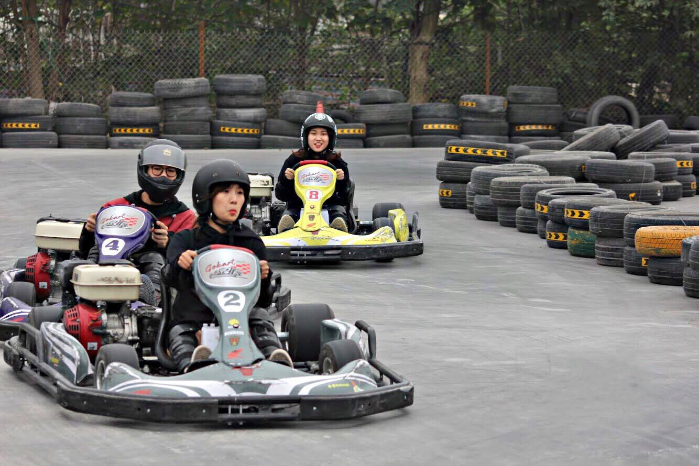
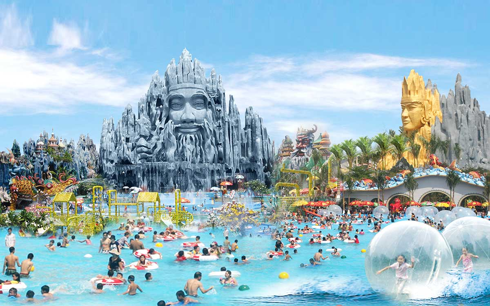
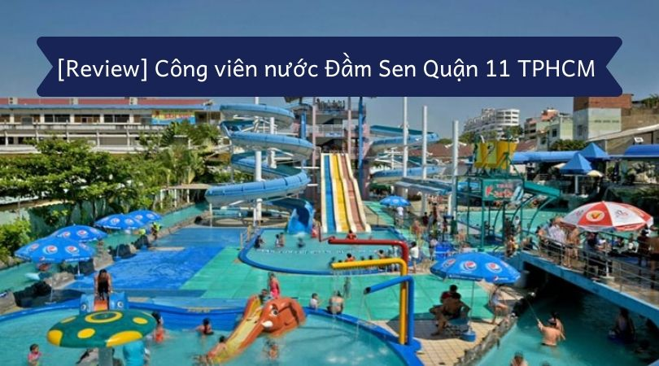

Địa Điểm Ăn Chơi Sài Gòn
* Kart 1 - đua xe Go Kart
 Đi chơi đâu cuối tuần gần Sài Gòn? Chắc chắn không thể bỏ lỡ đường đua công thức 1 Go Kart với chiều dài 340m là thánh địa cho các tay đua đam mê tốc độ và những chiếc siêu xe tựa như bộ phim “Fast & Furious” nổi tiếng của Hollywood. Toàn bộ xe go-kart tại Kart 1 đều là những thiết bị mới nhất được nhập khẩu trực tiếp từ Đức và tích hợp chip định vị thông minh để đo thời gian và thành tích từng chặng cho người chơi. Nếu là người mới thì bạn nên tham gia các buổi huấn luyện để làm quen và thử sức với các đường đua khác nhau trước khi thi đấu chính thức cùng bạn bè, người thân. Tuy mức giá khá đắt đỏ nhưng cuối tuần lập hội đua xe thì còn gì “ngầu” hơn nữa. Nhớ chuẩn bị đầy đủ găng tay, mũ bảo hiểm trùm đầu, kính, đồ bảo hộ trước hoặc có thể thuê ngay tại khu vui chơi này với mức phí tương đối rẻ. Địa chỉ: Hello Park 582/12 Huỳnh Tấn Phát, phường Tân Phú, quận 7, thành phố Hồ Chí Minh - Giá vé: Giá đua xe: + 5 phút: 125.000 VND + 10 phút: 200.000 VND + 15 phút: 275.000 VND - Giá huấn luyện: + Huấn luyên cá nhân 1:1: 1.000.000 VND/giờ + Huấn luyện nhóm (từ 2 đến 4 người): 1.500.000 VND/giờ - Giờ mở cửa: + Thứ 2 - thứ 6: 15:00 – 21:00 + Thứ 7, Chủ nhật & ngày lễ: 10:00 – 21:00
* Khu du lịch Suối Tiên
 Cái tên đình đám trong địa điểm đi chơi ở Sài Gòn cuối tuần một thời gọi tên Suối Tiên quả không sai. Với 4 khu vực chính được chia theo chủ đề tứ linh Long - Ly - Quy - Phụng tương ứng với Kim - Mộc - Thủy - Hỏa với mong muốn xây dựng đất nước yên bình, phát triển vượt bậc và bền vững, khu du lịch Suối Tiên thực sự là khu du lịch cuối tuần gần Sài Gòn hợp lý nhất cho cả gia đình. Một điểm nhấn mà rất nhiều du khách thích thú tại Suối Tiên chính là bức tượng Lạc Long Quân và Âu Cơ khổng lồ được tạc ngay bãi biển nhân tạo Tiên Đồng hút khách giữa khu du lịch, đặc biệt là trong các ngày nghỉ. Đặt ngay vé máy bay đi Sài Gòn thôi! - Địa chỉ: số 120 xa lộ Hà Nội, phường Tân Phú, quận 9, thành phố Hồ Chí Minh - Giá vé: 100.000VNĐ/người lớn và 50.000VNĐ/trẻ em - Giờ mở cửa: + Thứ 2 – thứ 6: 08:00 - 17:30 + Thứ 7 & Chủ nhật: 08:00 - 18:00 + Lễ, Tết: 06:30 - 22:00
* Khu du lịch The BCR
 Quả là thiếu xót lớn nếu không liệt kê The BCR vào danh sách địa điểm đi chơi ở Sài Gòn
thích hợp cho ngày cuối tuần nhất. Khu du lịch BCR có rất nhiều hoạt động thú vị khác nhau như bắn súng sơn, bắn súng nước, bắn cung,... chèo kayak,
chơi golf hay các trò chơi nhẹ nhàng khác. Tại đây cũng kết hợp dịch vụ lưu trú, ăn uống và tổ chức teambuiding, vui chơi cho đoàn đông người.
- Địa chỉ: 191 đường Tam Đa, phường Trường Thạnh, quận 9, thành phố Hồ Chí Minh
- Giá vé: 50.000 - 200.000VNĐ/người
- Giờ mở cửa: 8h - 18h thứ 3 đến chủ nhật
Quả là thiếu xót lớn nếu không liệt kê The BCR vào danh sách địa điểm đi chơi ở Sài Gòn
thích hợp cho ngày cuối tuần nhất. Khu du lịch BCR có rất nhiều hoạt động thú vị khác nhau như bắn súng sơn, bắn súng nước, bắn cung,... chèo kayak,
chơi golf hay các trò chơi nhẹ nhàng khác. Tại đây cũng kết hợp dịch vụ lưu trú, ăn uống và tổ chức teambuiding, vui chơi cho đoàn đông người.
- Địa chỉ: 191 đường Tam Đa, phường Trường Thạnh, quận 9, thành phố Hồ Chí Minh
- Giá vé: 50.000 - 200.000VNĐ/người
- Giờ mở cửa: 8h - 18h thứ 3 đến chủ nhật
* Công viên nước Đầm Sen
 Mùa hè thì đi biển là lẽ dĩ nhiên, nhưng bạn không có đủ thời gian để khám phá các địa điểm du lịch biển gần Sài Gòn thì hãy tới ngay công viên nước Đầm Sen để nạp “vitamin sea” nhé! Tuy không sở hữu bãi cát trắng, làn nước trong xanh như ngọc nhưng đến với công viên nước Đầm Sen luôn là địa điểm vui chơi cuối tuần lý thú ở Sài Gòn cho mọi lứa tuổi. - Địa chỉ: Số 3 Hòa Bình, Phường 3, Quận 11, Tp.Hồ Chí Minh - Giá Vé: + Cao trên 1.4m: 170.000VNĐ/trước 16h và 150.000VNĐ/sau 16h + Cao từ 0.8m đến 1.4: 130.000VNĐ/trước 16h - 110.000VNĐ/sau 10h tối + Cao dưới 0.8m và người trên 60 tuổi: Miễn phí - Giờ mở cửa: + Thứ 2 đến thứ 7: 09h00 - 18h00 + Thứ 3: đóng cửa + Chủ nhật & ngày lễ: 08h30 - 18h00